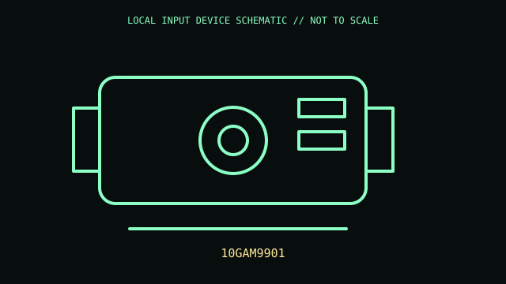

[ IMAGING AND AUDIO-CAPTURE PERIPHERALS // IDENTIFIED COMPONENT ]
Elgato Cam Link 4K
USB capture interface that exposes a compatible HDMI camera as webcam/video input.

MODEL IDENTIFICATION: 10GAM9901. Confirm the printed SKU, revision, bundle, region, and supplied accessories before repair or compatibility claims.
Model specifications
| Catalog leaf | Imaging and audio-capture peripherals |
|---|---|
| Exact model / identifier | 10GAM9901 |
| Physical mechanism and primary specifications | HDMI input to USB 3.0 capture; signal support up to 4K30 or 1080p60 subject to source/host; USB-A output; no independent recording. |
| Compatibility and interface caveats | Requires clean HDMI output from source camera and supported capture software/OS. Resolution, audio, and frame rate depend on source signal and host bandwidth. |
| Revision identification | Record complete product label, revision, region, and accessories. Similar family names may differ in protocol, connector, feature set, and host requirements. |
Preservation and service
Avoid bending HDMI leads at device connector; keep vents clear and prevent static discharge at HDMI shell.
Record observed condition, accessories, host OS, driver/app version, and test conditions separately from vendor specifications.
Primary manufacturer sources
- Elgato Cam Link 4K productManufacturer documentation; verify exact PID and regional/revision markings against the physical unit.
- Elgato supportManufacturer documentation; verify exact PID and regional/revision markings against the physical unit.
Retain the applicable manual with the equipment record; manufacturer support pages and software availability may change.